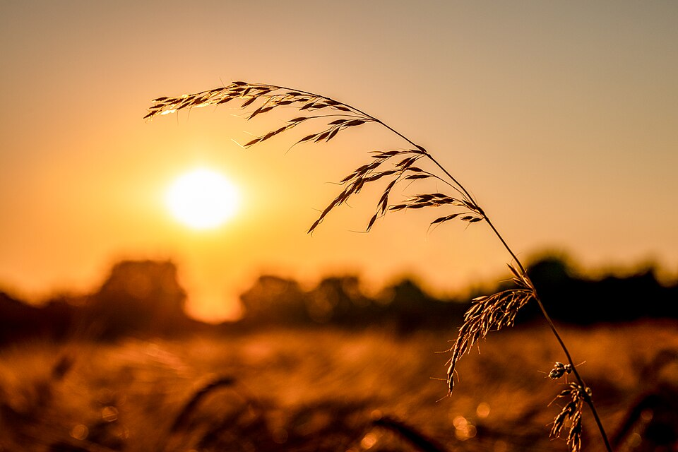
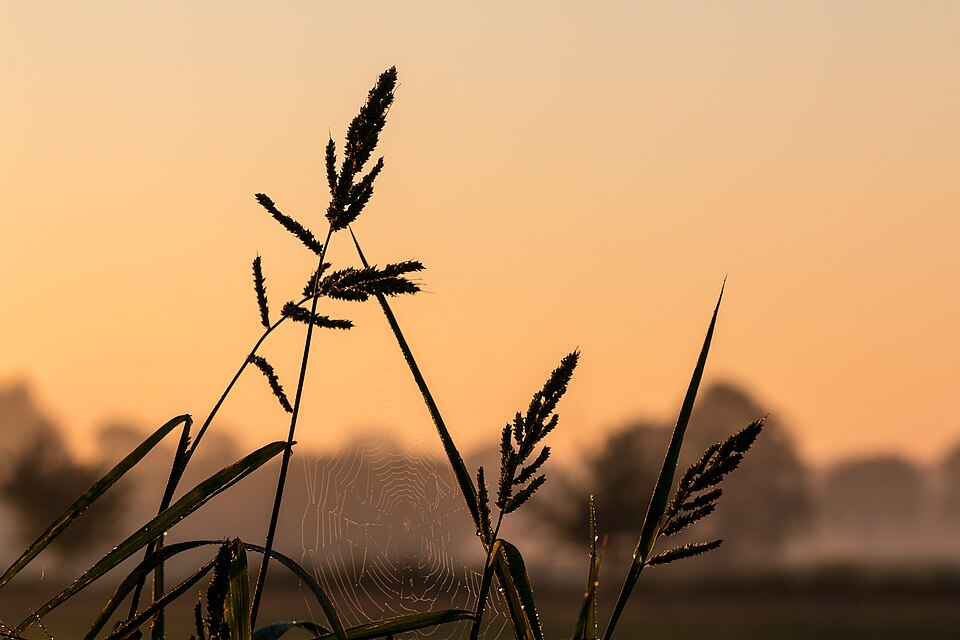
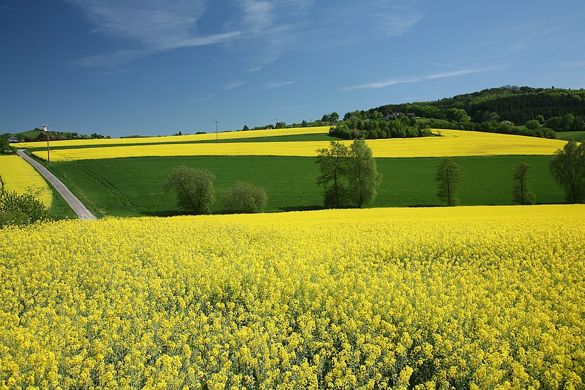

O agronegócio é essencial para alimentar a população e impulsionar a economia. Para continuar crescendo de forma sólida, é fundamental adotar práticas que aumentem a produtividade sem comprometer os recursos naturais. Produzir com responsabilidade significa unir eficiência, inovação e respeito ao meio ambiente.

O uso de tecnologias no campo tem permitido uma produção mais sustentável. Ferramentas de agricultura de precisão, manejo adequado do solo e uso racional da água ajudam a reduzir impactos ambientais, preservar a biodiversidade e garantir o equilíbrio entre desenvolvimento e conservação.
Um agro forte é aquele que pensa no futuro. Ao investir em práticas sustentáveis, produtores contribuem para a segurança alimentar, a proteção dos ecossistemas e a qualidade de vida das próximas gerações. O equilíbrio entre produção e meio ambiente é o caminho para um desenvolvimento duradouro e sustentável.
